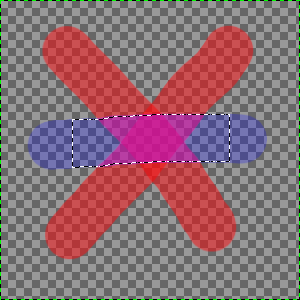

The command converts the layer masks of the selected layers into a selection. The intersection of this selection and the selection that is already active form the new selection for the image.
White areas of the layer mask are selected, black areas are not selected, and gray areas are converted into feathered selections. The layer mask itself is not modified by this command.
Figura 16.99. Illustration of Intersect Masks with the Selection

The original image with a selection.

The Layers Dialog with a layer mask created via Add Layer Masks… with the “Layer's alpha channel” option enabled.

The result after applying “Intersect Masks with Selection”: the selection of the non-transparent pixels of the active layer is the common part between the initial selection and the masks.